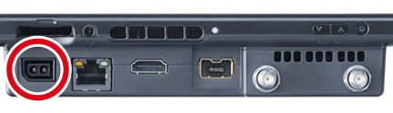
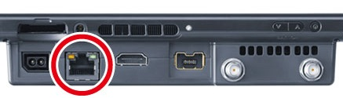
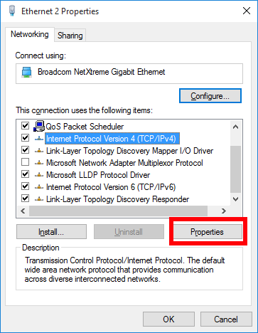
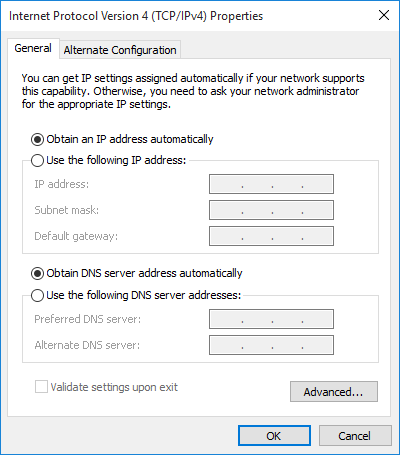
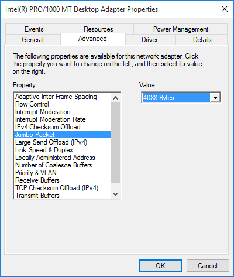
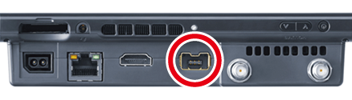

The following three steps are required in order to prepare the SDEV.
- Turn the SDEV unit on.
- Connect the SDEV to the PC.
- Connect the Wii Classic Controller Pro.
Before taking any of these steps, check the DIP switches on the lower left of the back of the SDEV (circled in red in the image), and confirm that they all are set in the up position.

Turning the SDEV Unit On
Connect the included Wii U console AC adapter to the AC adapter connector on the top of the SDEV (circled in red in the figure).
The SDEV does not have a primary POWER switch to turn power on and off, so you must connect and remove the Wii U console AC adapter to do so.
When you press and hold the POWER Button atop the SDEV console for six seconds, the NX system will turn off, but the SDEV's main power will remain on.

You can check that the SDEV has been turned on using the following methods.
- The LED on the Ethernet port on top of the SDEV lights up (and then turns off after approximately 10 seconds).
- The three LEDs on the lower left of the back of the SDEV light up. (All three LEDs will light up for a few seconds, and then they will turn off except for the LED in the middle.)
Connecting the SDEV to the PC
Connect an Ethernet cable to the Ethernet port on the top of the SDEV (circled in red in the figure).

Use one of the following methods to connect the PC and the SDEV console via Ethernet.
- Connect the PC and the SDEV directly with the Ethernet cable.
- The setting for the network card directly connected to the SDEV must be to set to Obtain an IP address automatically.
- For information about configuring this setting, see the Direct Connection IP Address Settings section later in this document.
- The SDEV and PC are connected via a network with a DHCP server.
Direct Connection IP Address Settings
| Procedure | Operation |
|---|---|
| 1 |
From Control Panel, select Networking and Internet > Network and Sharing Center, and then select the Ethernet interface to use to connect to the SDEV.
|
| 2 |
Select Properties.
|
| 3 |
Select Internet Protocol version 4 (TCP/IPv4) and then select Properties.  |
| 4 |
Configure the settings as follows.  |


The communication speed with the SDEV can be improved when the PC's network adapter supports Jumbo Frame.
Open the device manager, and set the Jumbo Frame to 4 KB or 4088 bytes in Network Adapter > Properties > Advanced Settings.
Note: It may be noted as JumboPacket depending on the settings.

Connecting the Wii Classic Controller Pro
Connect the Classic Controller PRO to the debug controller terminal (circled in red in the following figure) on top of the SDEV.
The Classic Controller PRO can be used as a debugging controller.

CONFIDENTIAL